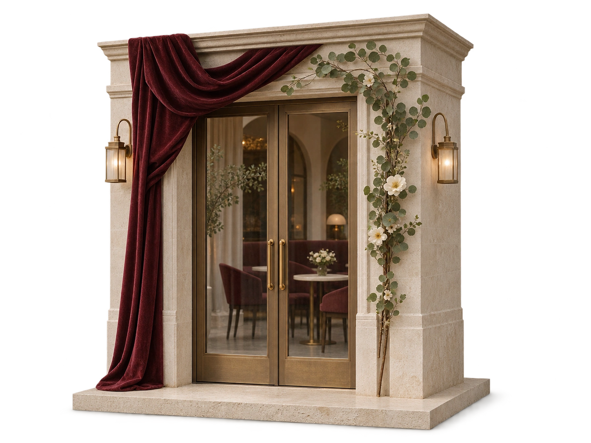
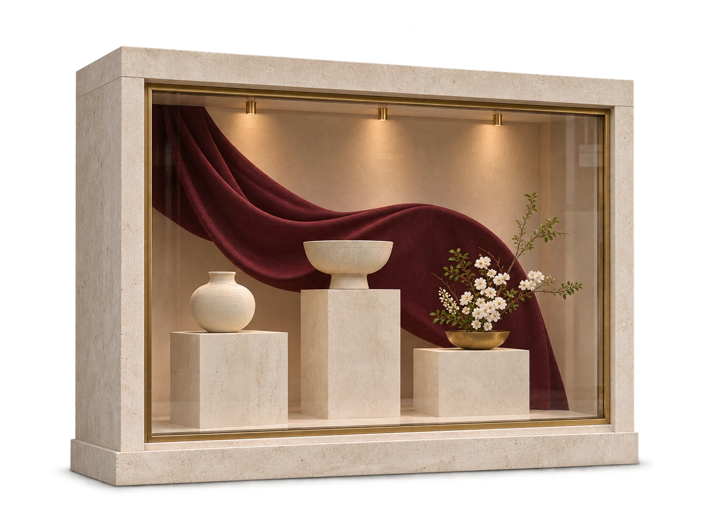
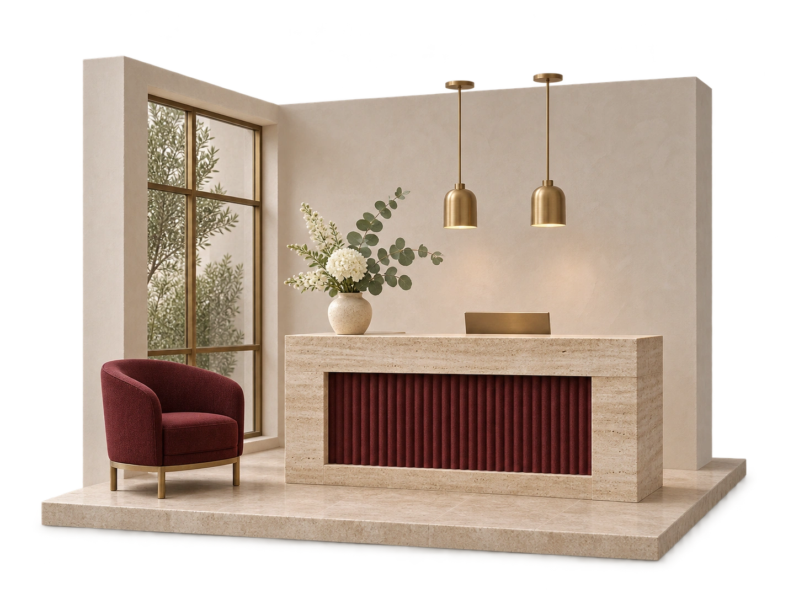

← К главнойДекория.
Дизайн-система v6.1
Фотография, бордовый, ivory и тонкая линия. Конкретный текст и один понятный следующий шаг.
Палитра
burgundy#57212F
ivory#F6F0E5
ink#281C20
muted#6D5A60
line#D4C6BD
white#FFFCF7
rose#E8D9D3
dark#32131D
error#A73434
Golos Text
В таблице размеры образцов ограничены 54 px, чтобы она оставалась читаемой на узком экране. Рабочий размер указан во втором столбце.
| Роль | Размер | Образец |
| display | 84 px | Декория |
| h2 | 54 px | Декория |
| h3 | 26 px | Декория |
| body | 16 px | Декория |
| small | 14 px | Декория |
| micro | 11 px | Декория |
| label | 11 px | Декория |
| button | 15 px | Декория |
| mobileDisplay | 44 px | Декория |
| mobileH2 | 34 px | Декория |
| expert | 64 px | Декория |
| faqDesktop | 19 px | Декория |
| faqMobile | 17 px | Декория |
| base | 17 px | Декория |
Действия и состояния
Наведение и фокус доступны на образцах. Основная кнопка не сжимается ради соседней ссылки: при увеличении текста ссылка получает отдельную строку. Размер нажатия от 44 × 44 px.
Поля и пояснения
Label сохраняется при вводе. Ошибка объясняется текстом, введённые данные не стираются. Контакт не запрашивается локальным помощником.
Векторные иконки
arrow
check
close
entrance
floral
interior
mount
plus
season
12 отдельных SVG. Сетка 24 × 24, штрих 1,5 и единые окончания. Интерфейсные знаки имеют подписи или доступное имя.
Композиция и сетка
Контейнер до 1312 px. Макеты 1440 и 390 px. Поля web: clamp(20px, 4.45vw, 80px). Компоновка меняется по содержимому: горизонтальные галереи, отдельный портрет на мобильном, одна колонка формы.
В Figma повторяются семантические переменные цветов, общие текстовые стили и инстансы кнопок, проектов, FAQ и иконок. Подтверждённые границы: 360/390/600/768/900/1024/1440/1920 px, обычный и +25% текст.
Движение
Контролы 250 мс. Появление 720 мс, шаг 90 мс. Hero 900–1200 мс. Кривая cubic-bezier(.16,1,.3,1). Все значения — в motion-config.js; подробности — в карте анимации.
Без autoplay и перехвата прокрутки. Hover только для мыши. Reduced motion оставляет содержимое статичным. Основной текст виден до выполнения JavaScript.
FAQ
Можно прийти со своим проектом?+
Да. Команда работает по готовому техническому заданию или разрабатывает индивидуальную концепцию.
Фотография и фирменная графика
Исходные фотографии показывают реальное оформление. Несколько ракурсов одного объекта раскрываются внутри одного проекта. Идеи оформления отделены от фотографий портфолио. Исходное лицо и верх портрета сохраняются; исправленные кисти и манжеты, стол и помещение — отдельные активы.
Растровые мини-сцены / v6.1
Три цельные фотографические композиции: вход, витрина и интерьер. Hover, фокус и касание включают масштаб 1,035, подъём 7 px и индивидуальные пояснения за 850 мс. Курсор наклоняет сцену до ±3°/±4°; однократный блик проходит за 1400 мс. Иконки этапов рисуются штрихом за 900 мс; заголовки появляются словами через маску за 820 мс. На устройствах с reduced motion декоративное движение отключено.
Офис: до 44 px по горизонтали, 24 px по вертикали и 1,4° наклона. Портрет, стол и руки остаются одной неподвижной композицией после вступления. До 1100 px фон статичен.



Свет на контуре
Авторский векторный паттерн проявляется через градиентную маску: цикл 11 секунд, прозрачность 0,035–0,12. Анимация приостановлена вне секции; reduced motion оставляет тихий статичный рисунок. Текст и действия расположены выше фонового слоя.
Фотографическая композиция
Столешница продолжается за оба края экрана. Лицо использует исходный одобренный портрет. Кисти и целые манжеты исправлены отдельным растровым слоем; мягкое совмещение ниже груди и контактная тень сохраняют цельность сцены. Ваза убрана из столешницы, чтобы не пересекать рукав. Материальный кадр расширен для параллакса: запас 120 px сверху и снизу, движение до ±105 px; на мобильных до ±36 px.